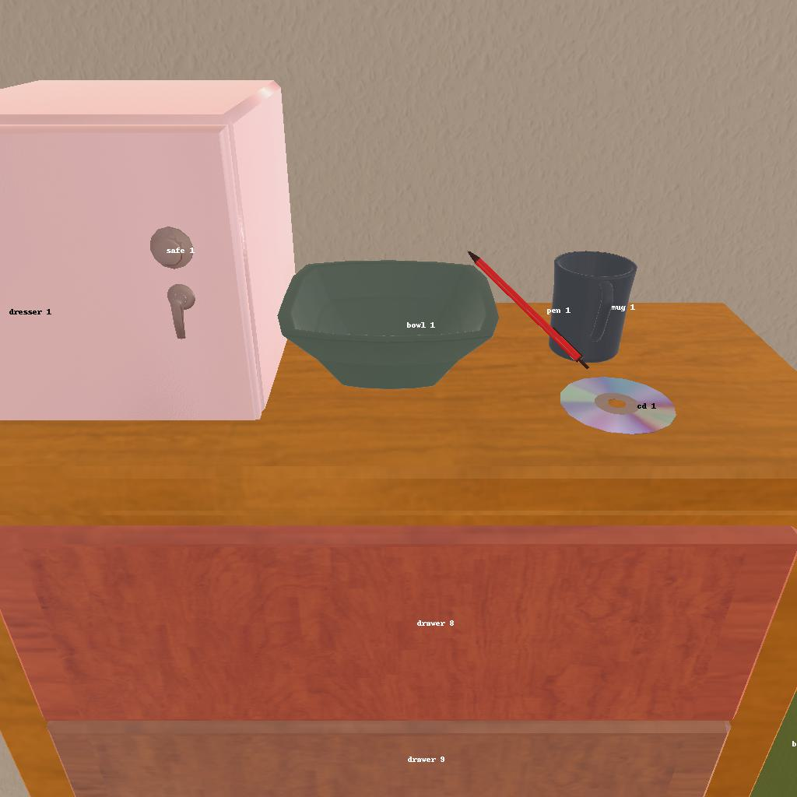

---------------------------------------------------------task: 6---------------------------------------------------------
--------------------------------------------------------------------------------------------------------------------------------------------------------------------
--------------------------------------------------------------------------------------------------------------------------------------------------------------------
Step:--------------------------------------------------------------------------9-------------------------------------------------------------------------------
----------------------------------------
VLM Prompt:
Image1:
Image2:
Image3:
**Instruction**
1. Analyze the provided image to identify all visible household objects, focusing on those relevant to the task description "put some cd on safe."
2. Use the analysis of the image and the task hint "The agent must find an object of the desired type, pick it up, find the correct location to place it, and put it down there." to answer the question: what is the most reasonable action in the choices for the task description "put some cd on safe"?
4. Decide and write the answer using the template: The answer is: (i): , where i is the real number. If there is no desired object in the image, search every place based on **Initial Observation** to find the object. And if no one is exactly correct, choose a similar answer.
**Initial Observation**
You are in the middle of a room. Looking quickly around you, you can see bed (1-2), dresser (1), sidetable (1-2), drawer (1-11), desk (1), garbagecan (1), safe (1)
**Answer Choices**
(1): go to bed 1
(2): go to bed 2
(3): go to sidetable 1
(4): go to drawer 1
(5): go to drawer 2
(6): go to sidetable 2
(7): go to drawer 3
(8): go to drawer 4
(9): go to desk 1
(10): go to garbagecan 1
(11): go to drawer 5
(12): go to drawer 6
(13): go to drawer 7
(14): go to drawer 8
(15): go to drawer 9
(16): go to drawer 10
(17): go to drawer 11
(18): go to safe 1
(19): take bowl 1 from dresser 1
(20): take mug 1 from dresser 1
(21): take pen 1 from dresser 1
**Answer**
Let's think step by step by following the instructions.
----------------------------------------
----------------------------------------
Original Response:
First, we need to identify all visible household objects relevant to the task "put some cd on safe." In the images provided, we can see a CD labeled "cd 1" on the surface of dresser 1. This object is relevant to our task.
Next, we need to consider the task hint, which suggests that the agent must pick up the desired object and place it in the correct location. In this case, the desired object is the CD, and the correct location is on the safe.
Based on the initial observation, we know that there is a safe (safe 1) in the room. Therefore, the most reasonable action for the task "put some cd on safe" is to first take the CD from where it is and then go to the safe to place it on top.
Looking at the answer choices, there is no direct option to take the CD. However, we can infer that taking the CD would be the first step before going to the safe. Since the CD is on the dresser and there is no option to take the CD, we must choose an action that involves going to the dresser.
The closest action that involves interacting with the dresser is (19): take bowl 1 from dresser 1, as it implies being at the dresser where the CD is located. However, this action specifies taking the bowl, not the CD. Since there is no exact action for taking the CD, we choose the closest action that involves being at the correct location, the dresser.
The answer is: (19): take bowl 1 from dresser 1.
----------------------------------------
----------------------------------------
>>> Refine Original VLM Response and Get Pure Action: take bowl 1 from dresser 1
----------------------------------------
-----------------------------------------------------------------
Running time: 32.0029981136322 seconds
Total Money: 3.3240399999999997
-----------------------------------------------------------------
-----------------------------------------------------------------
Text Observation:You pick up the bowl 1 from the dresser 1.
-----------------------------------------------------------------
UNSUCCEED